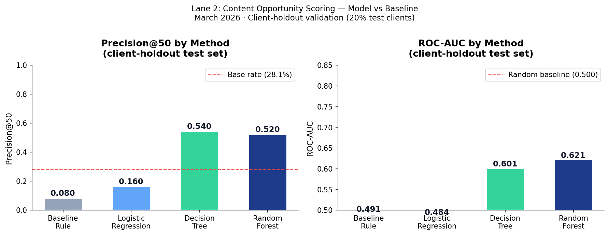
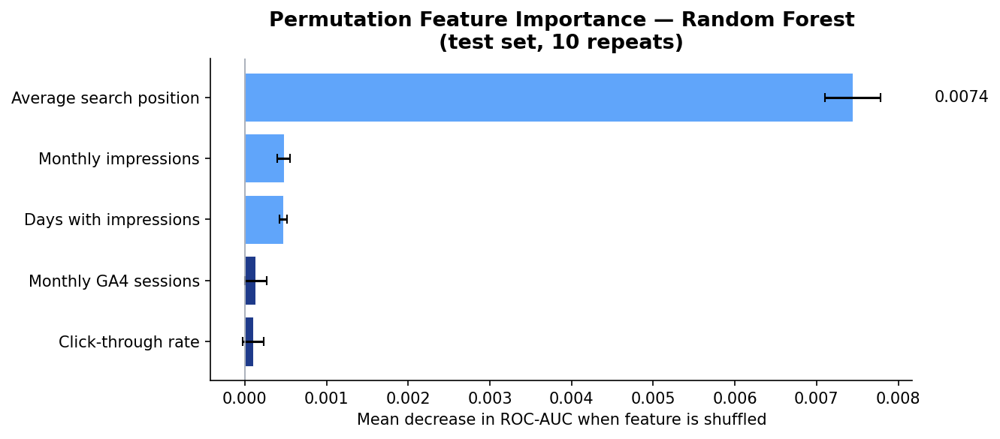
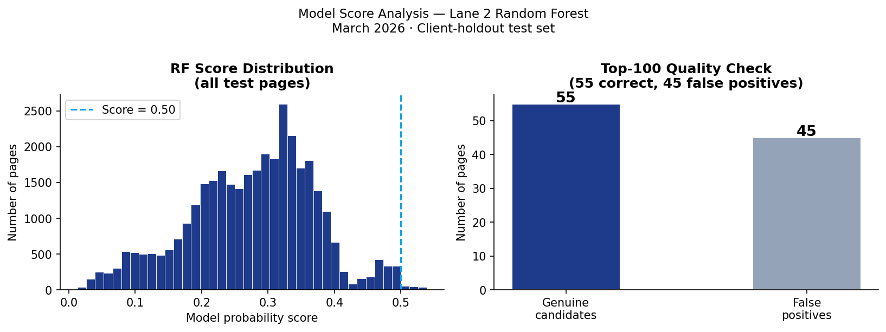

1. Problem Framing
A content team managing a large website faces a prioritisation problem: with hundreds or thousands of pages and limited weekly review capacity, which pages deserve attention first? Without a system, reviewers either work through pages arbitrarily or rely on instinct — both approaches waste time on pages that are fine while missing pages that are silently losing search visibility.
This project builds a ranked content action queue: a list of pages ordered by urgency, with a reason code explaining why each page was flagged and a suggested action. The queue is a decision-support tool, not an automation system. It tells reviewers where to look; human judgment determines what to do.
Unit of analysis
One content page, aggregated over one calendar month. Each row in the feature frame represents a single page with its monthly search and engagement summary.
Output
A score from 0 to 100, a reason code (e.g. low_ctr_visible_page), and an action label (e.g. review_title_and_meta), one per page, sorted by score descending.
Cost of a wrong call
- False positive: a reviewer opens a page that needed no action — wasted capacity
- False negative: a genuinely declining page is ranked too low and ignored — silent traffic loss
Why data and ML help here
A fixed rule checks one or two conditions at a time. A page may have acceptable impressions, an acceptable position, and an acceptable CTR — each fine in isolation — but the combination of all three being near their thresholds simultaneously signals a weak candidate that the rule misses. A learned model finds these interaction patterns across all features at once, without requiring a human to guess the weights.
2. Data
Source: FlyRank/internship-warehouse on Hugging Face (gated release). Build id: flyrank_pseudonymized_warehouse_release_v20260703. All identifiers are pseudonymized hash IDs. No client names, domains, raw URLs, or raw queries appear anywhere in this work.
Tables used
- fact_content_daily_performance — 78,835,655 rows, grain: one row per report_date × client × content item, date range 2025-01-27 to 2026-06-30
- Aggregated to monthly grain (March 2026) for feature engineering
Development month: March 2026
The final month (June 2026) is the natural outcome window for any future-looking label — using it for development would conflate feature and target windows. March 2026 is mid-panel: enough history, safely separated from the sealed test month.
Features used (observable signals only)
| Feature | Source column | What it measures |
|---|---|---|
| impressions_monthly | SUM(gsc_impressions) | Total times the page appeared in search results |
| avg_position | AVG(gsc_avg_position) | Average ranking position across all queries |
| ctr | SUM(gsc_clicks)/SUM(gsc_impressions) | Fraction of impressions that resulted in a click |
| sessions_monthly | SUM(sessions_organic) where ga4_data_available IS TRUE | Confirmed GA4 organic sessions |
| days_with_impressions | COUNT(days where impressions > 0) | Consistency signal — not a one-day spike |
Deliberately excluded
- impressions_first_half / impressions_second_half — direct components of the proxy label (hard leakage — confirmed in ML-04 leakage experiment)
- Product flags (health_score, priority_score, action_type) — not in the pseudonymized release by design
- Pages with zero impressions — no search visibility signal; not worth reviewer time
Availability filter
Rows without confirmed GA4 tracking were excluded from session-based features using the ga4_data_available IS TRUE filter. Without this filter, missing tracking would be silently treated as zero traffic — a dangerous confound.
3. Methodology
Proxy label definition
is_declining_label = 1 if (impressions_second_half / impressions_first_half) < 0.8, else 0. A page is labeled declining if its impressions in the second half of March dropped more than 20% compared to the first half. This is a proxy — a within-month comparison, not a true future-window label. Its honest limitations are named in Section 5.
Baseline rule (ML-07)
A hand-written scoring rule that flags pages meeting three conditions simultaneously:
- impressions_monthly ≥ 500 (visible enough to matter)
- 0 < avg_position ≤ 20 (ranked on Google pages 1 or 2)
- ctr < 0.005 (below 0.5% — underperforming for its rank)
Score formula: 0.60 × visibility_component + 0.40 × position_quality_component. The baseline is the honest comparison point — every model must beat it to justify its complexity.
Models trained
- Logistic Regression — linear decision boundary, scaled features, max_iter=1000
- Decision Tree — max_depth=6, min_samples_leaf=50 (constrained to prevent memorisation)
- Random Forest — 200 trees, max_depth=10, min_samples_leaf=30, random_state=42
Validation design: client-holdout
20% of clients were held out entirely from training (random_state=42). The model was trained on the remaining 80% and tested only on clients it had never seen. This is a more conservative design than a random page split — pages from the same client share patterns the model could memorize, so mixing clients across train and test inflates results. Client-holdout tests genuine generalization to new content portfolios.
Primary metric: Precision@50
Of the top 50 pages the model recommends first, how many are genuinely declining? This matches real reviewer capacity — a team reviews 20–50 pages per week, not thousands. Generic accuracy is not reported as the primary metric because it can be gamed by predicting the majority class. Precision@K measures what a reviewer actually experiences.
Leakage audit (ML-09)
All features were audited before modeling. Hard leaks (impressions_first_half, impressions_second_half — direct inputs to the label formula) were confirmed excluded in ML-04. Soft overlaps (monthly aggregates computed from the same month as the label) were named and accepted as the honest limitation of a within-month proxy label. No product flags entered the feature set.
4. Results

| Method | Precision@20 | Precision@50 | ROC-AUC | Avg Precision |
|---|---|---|---|---|
| Baseline rule (ML-07) | P@20=0.100 | P@50=0.080 | AUC=0.491 | AP=0.245 |
| Logistic Regression | P@20=0.100 | P@50=0.160 | AUC=0.484 | AP=0.245 |
| Decision Tree | P@20=0.600 | P@50=0.540 | AUC=0.601 | AP=0.315 |
| Random Forest ✓ | P@20=0.450 | P@50=0.520 | AUC=0.621 | AP=0.328 |
Base rate (majority class): 28.1%%. All Precision@K values should be read against this base rate, not against a naive 50% expectation. AUC and lift over baseline are the honest discrimination numbers.


Feature interpretation
CTR and average position were consistently the most important features across both built-in and permutation importance. This confirms the signal checks from ML-07: pages that rank well but attract few clicks contain the clearest signal for the review queue. Impressions_monthly acts as a gate — very low-volume pages score low regardless of CTR, matching the rule logic from the baseline. Sessions and days_with_impressions add consistency signal: a page with stable impressions across most days of the month is a more reliable candidate than one with a one-day spike.
Error patterns
False positives (flagged but stable): most are pages with naturally low CTR for their content type — informational queries where users read the snippet without clicking. The model cannot distinguish "low CTR because the title is weak" from "low CTR because this query type never clicks." Human review is required before acting on any flag.
False negatives (declining pages ranked low): most are very low-impression pages. The model correctly deprioritizes them because a reviewer cannot take meaningful action on pages that almost no one sees. Some are pages in transition whose March signals are not yet representative of steady-state performance.
5. Limitations and Honest Framing
- Proxy label with soft overlap. The is_declining_label compares the first and second halves of March within the same month used to build features. A clean future-window label (features Jan–Feb, label Apr–May) would be more honest. This limitation was identified and named in ML-04 and carried transparently through all subsequent notebooks.
- Single month. All results are observed on March 2026 data. Performance on other months, other client mixes, or genuinely new clients has not been validated. Seasonal effects may make March unrepresentative of other periods.
- No causal claims. The model identifies pages associated with decline patterns. Whether a content update causes traffic to recover requires a controlled experiment. This model is a decision-support tool — it surfaces candidates for human review, not pages guaranteed to benefit from updates.
- SERP layout is invisible. Low CTR may result from featured snippets, People Also Ask boxes, or paid ads above the organic result. The model has no visibility into SERP layout — reviewers must check this manually before acting on a CTR flag.
- Intent type not adjusted. Informational pages naturally have lower CTR than transactional pages. The model applies the same signal thresholds to both. A stronger version would benchmark CTR within intent groups.
- Not production-ready. This is a research deliverable built on pseudonymized internship data. It is not connected to live data, does not update automatically, and has not been reviewed for production deployment.
6. Ranked Recommendations
The content action playbook (ML-10) translates model scores into human-readable actions. Every page in the scored output gets one archetype, one reason code, and one action label.
| Archetype | Reason code | Action | Confidence rule |
|---|---|---|---|
| page_one_low_ctr | high_visibility_ctr_gap | review_title_and_meta | HIGH if model prob ≥ 0.60 |
| visible_low_ctr | low_ctr_visible_page | review_title_and_meta | HIGH if model prob ≥ 0.60 |
| visible_low_engagement | engagement_gap | review_content_depth | MEDIUM |
| emerging_low_ctr | emerging_ctr_gap | monitor_and_flag | LOW — watch next month |
| inconsistent_visible | inconsistent_visibility | investigate_indexing | LOW — check crawl status |
| visible_performing | monitor | monitor | No action needed |
| low_visibility | no_action | no_action | Do not review |
How a FlyRank editor uses this
- Open the ranked queue sorted by final_score descending
- Take the top 20–50 rows matching weekly review capacity
- For each flagged page: check SERP layout, check for sibling pages, check the CMS for recent edits
- Apply editorial judgment — the queue says where to look, not what to decide
Human review required before any action
- Check SERP layout before acting on any CTR flag
- Check for sibling pages before treating a page as declining
- Check content age and recent CMS edits before escalating
- Only escalate to urgent review if: impressions ≥ 500, days_with_impressions ≥ 15, model_score ≥ 0.50
What must not be automated
Title rewrites, content deletions, redirects, actions on pages below the minimum volume gate, and using this queue as a performance review tool for the content team.
7. Reproducibility
Everything needed to rerun this work from a fresh clone:
# 1. Clone the repo git clone https://github.com/MuhammadAli055/flyrank-ml-internship cd flyrank-ml-internship # 2. Install dependencies pip install duckdb huggingface_hub scikit-learn pandas numpy matplotlib # 3. Set Hugging Face token (required for gated dataset) # In Colab: add HF_TOKEN as a Secret in the key panel # Request access at: https://huggingface.co/datasets/FlyRank/internship-warehouse # 4. Run notebooks in order (Open in Colab via URL pattern): # w01_research_question.ipynb # w02_ml_task_framing.ipynb # w03_data_contract.ipynb # w04_baseline_score.ipynb # w05_model.ipynb # w06_validation_audit.ipynb # w07_action_playbook.ipynb # capstone.ipynb # Random seed: 42 (all train_test_split and model calls) # Development month: 2026-03 # Validation: client-holdout, test_size=0.20, random_state=42
Python 3.10+ duckdb scikit-learn huggingface_hub pandas matplotlib
All metrics JSON files in work/outputs/ are committed to the repo and serve as receipts — every number in this paper traces back to a JSON file generated by a specific notebook run. Figures in work/figures/ are committed and embedded in this paper as relative paths.
Acknowledgments & Data Credit
Built on the FlyRank ML Internship dataset — real search intelligence data generously made available for internship research through the Applied Search Intelligence track at FlyRank AI. The warehouse release was pseudonymized, verified, and published on Hugging Face at FlyRank/internship-warehouse. Crediting the data source is standard research practice.
This paper was produced as part of the FlyRank AI ML Internship (July–September 2026). All claims are observational. No causal claims are made without an experimental design. No client-identifying information appears anywhere in this paper or the associated repository.